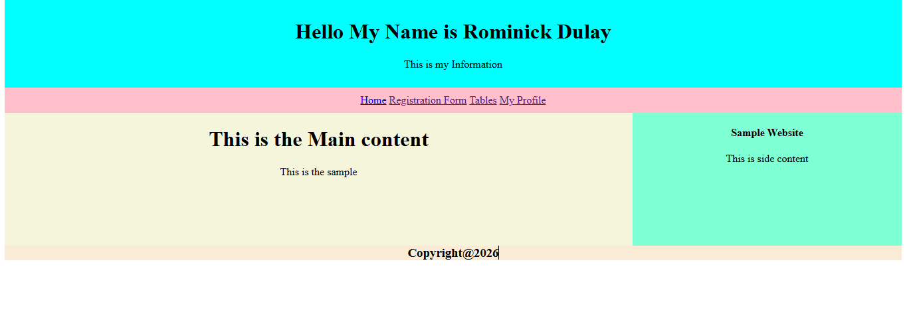
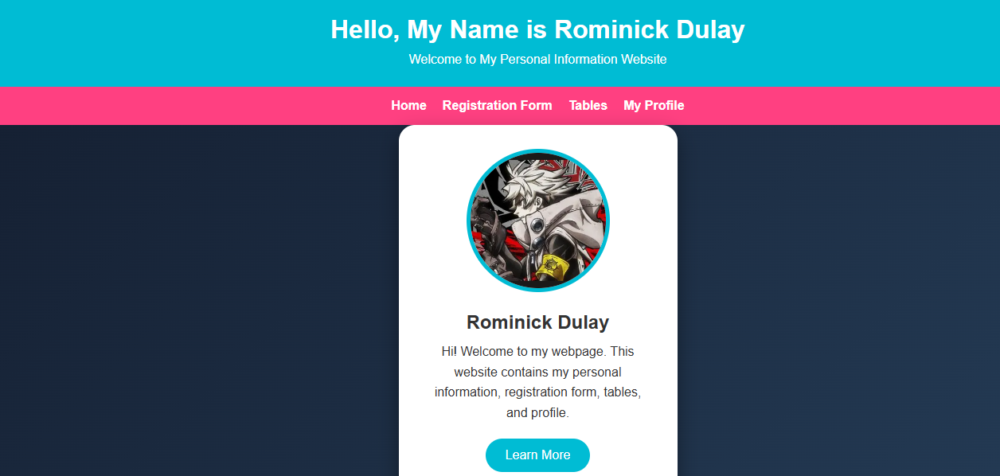
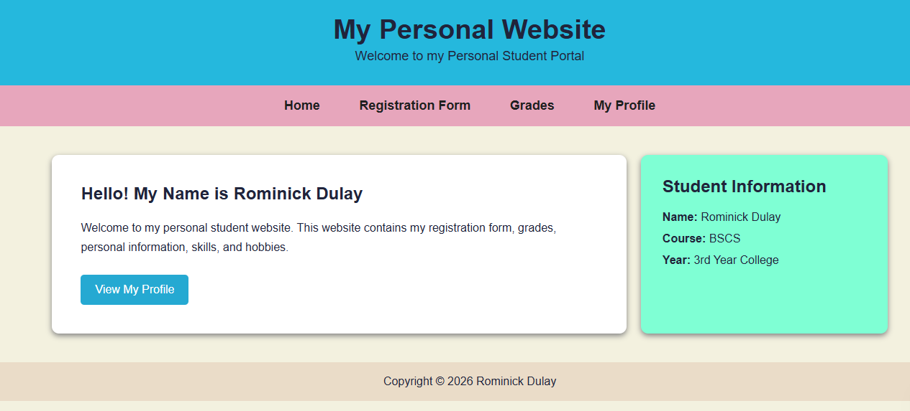
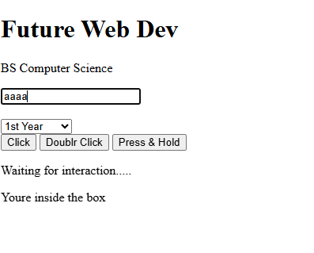
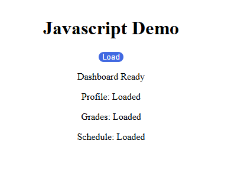
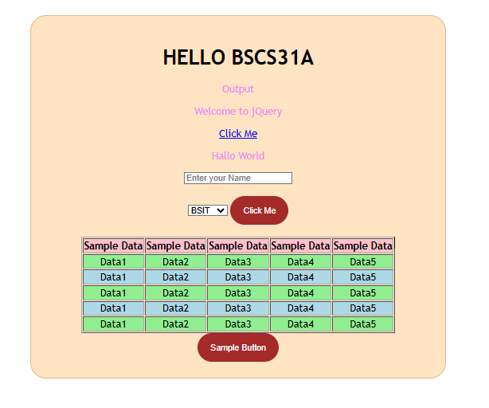

HTML
Semantic page structure, forms, tables, navigation, and reusable content sections.
I’m Rominick Cruz Dulay, a BSCS31A student who enjoys learning how websites are designed, developed, and improved. I am interested in front-end development, JavaScript interaction, and creating clean, practical, and user-friendly web experiences.
I am Rominick Cruz Dulay, a BSCS31A student who is continuously developing my skills in web development. I enjoy learning through hands-on activities and turning ideas into functional websites using HTML, CSS, JavaScript, and jQuery. I value simple, organized, and professional designs that are easy for users to understand and interact with.
This portfolio brings together the activities and projects I completed throughout my learning journey. Each one represents a step in improving my coding, design, problem-solving, and front-end development skills. Every project card opens the original live website in a new tab.
Semantic page structure, forms, tables, navigation, and reusable content sections.
Responsive layouts, modern card systems, typography, transitions, and visual hierarchy.
DOM events, interactive controls, dynamic content, and browser-side behavior.
Selectors, events, effects, and concise DOM manipulation for interactive exercises.
Click any card to open the original deployed website.

Open Live ↗A basic multi-section webpage with navigation, main content, side content, registration, tables, and profile pages.

Open Live ↗A personal information website with a cleaner visual presentation, profile image, navigation, and supporting pages.

Open Live ↗A student-focused website presenting registration, grades, profile information, skills, hobbies, and academic details.

Open Live ↗An interaction-focused exercise using inputs, selections, click, double-click, and press-and-hold events.

Open Live ↗A lightweight JavaScript activity that loads and displays profile, grades, and schedule information dynamically.

Open Live ↗A jQuery practice page combining buttons, inputs, select controls, sample tabular data, and interactive DOM behavior.
I would like to express my sincere appreciation to our instructor for the guidance, patience, and knowledge shared throughout our web development activities. These exercises helped me strengthen my understanding of HTML, CSS, JavaScript, and jQuery while also teaching me how to create more organized, functional, and presentable websites.
Thank you for giving us the opportunity to learn through practice and for encouraging us to improve our skills with every activity. The lessons and experience I gained from this subject will continue to help me grow as a Computer Science student and future developer.